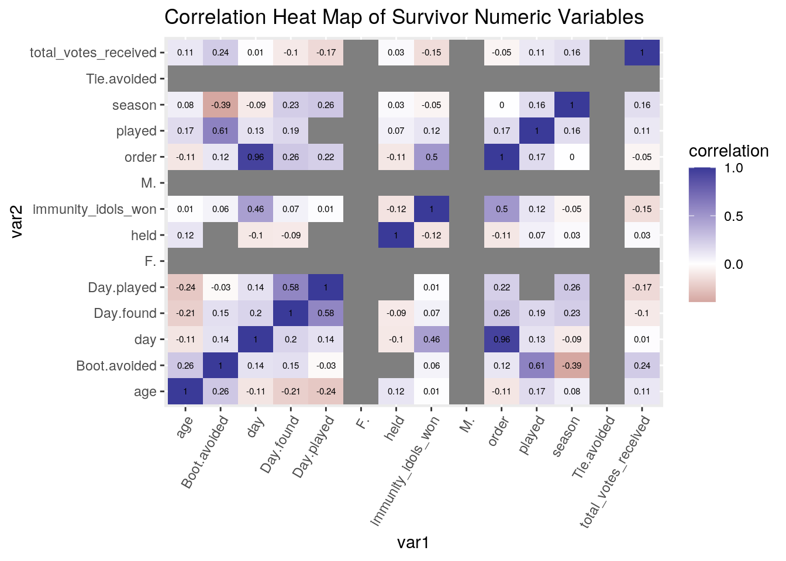
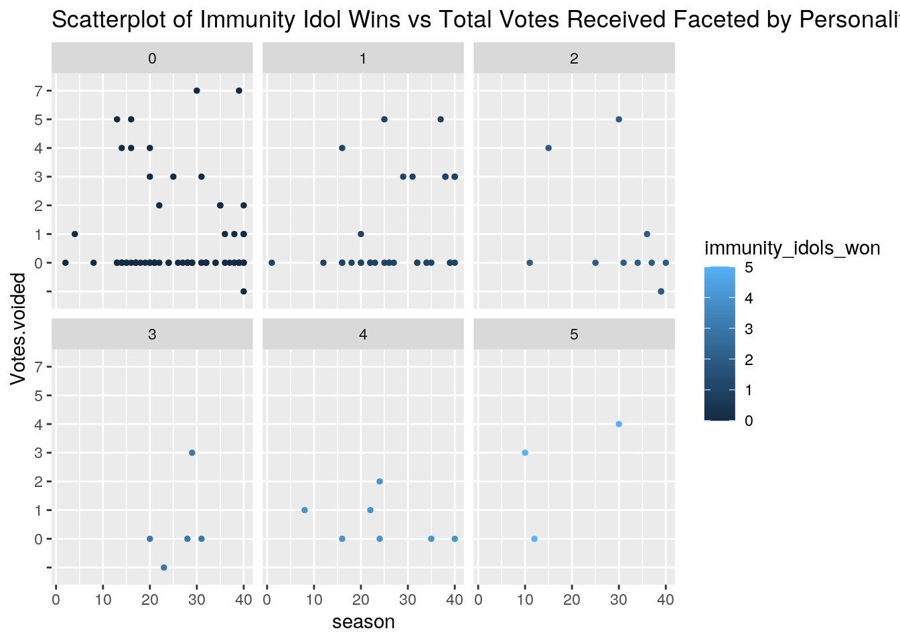
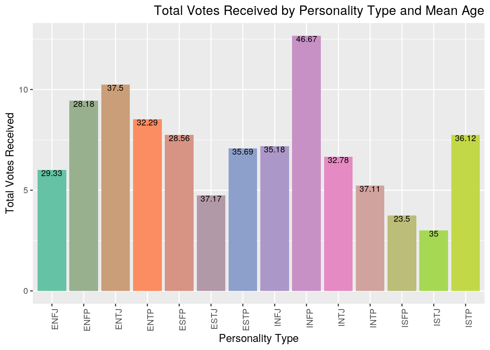
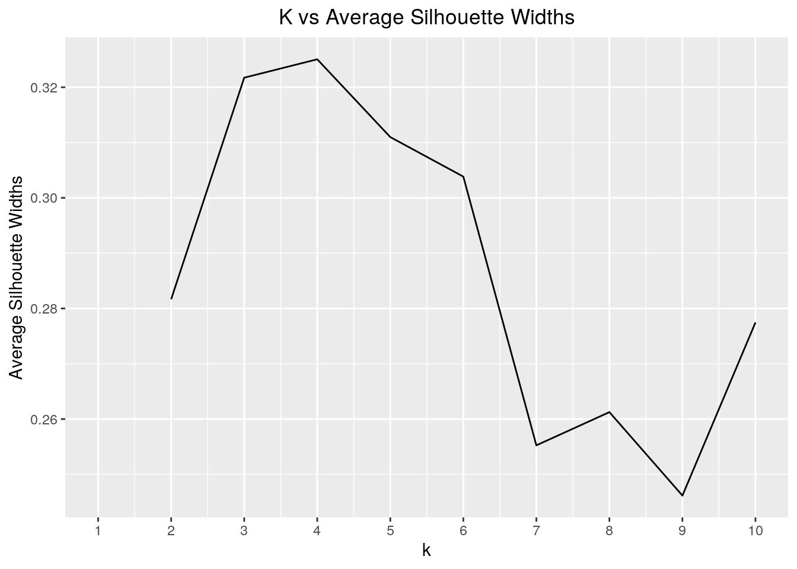
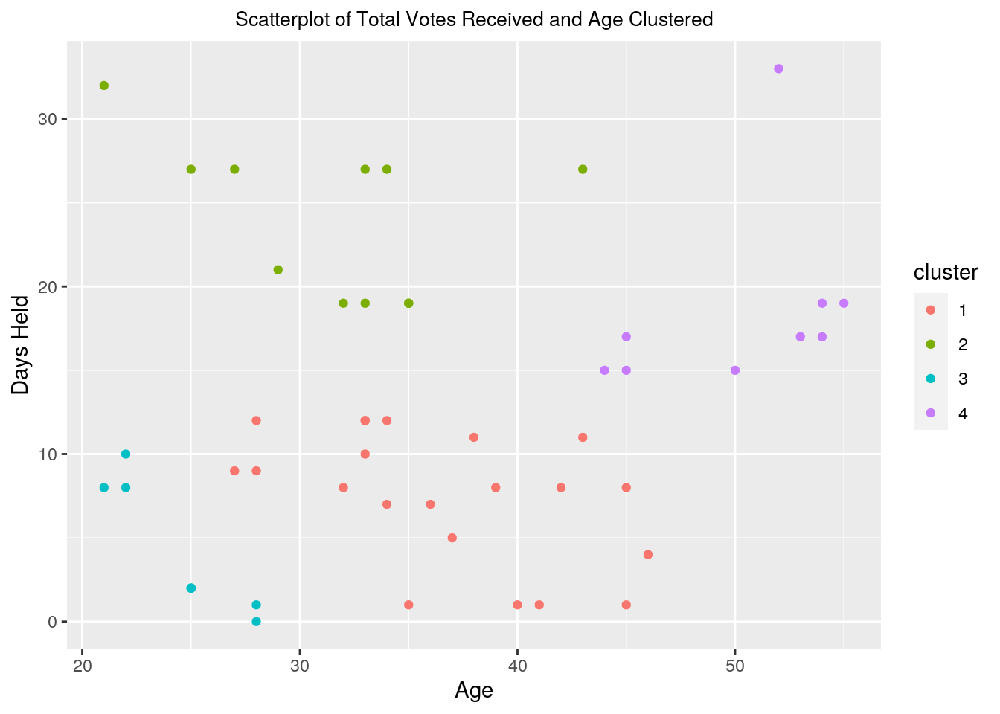
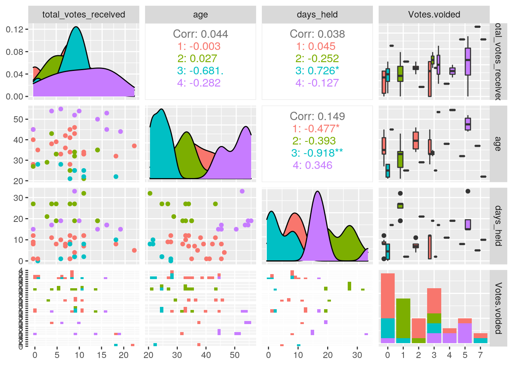
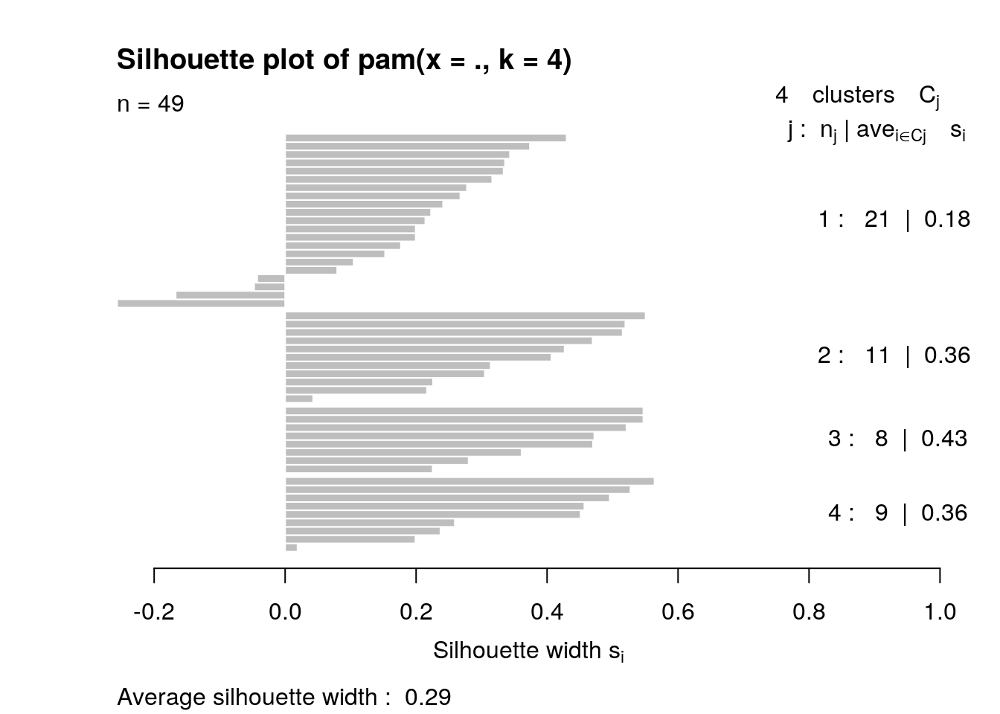

knitr::opts_chunk$set(echo = TRUE, eval = TRUE, fig.align = "center", warning = F, message = F,
tidy=TRUE, tidy.opts=list(width.cutoff=60), R.options=list(max.print=100))I became intersted in using these datasets because my roommate and I have started watching the show Survivor this semester. It is far more complex of a show that I remember from my child hood and is largely based on strategy. Much of this strategy is social and involves personal characteristics of the players. Strategy is also important and is dependent on winning challenges or idols. These datasets cover these two factors and I hoped to find them interesting. ## Joining
library(tidyverse)## ── Attaching packages ─────────────────────────────────────── tidyverse 1.3.0 ──## ✓ ggplot2 3.3.3 ✓ purrr 0.3.4
## ✓ tibble 3.0.4 ✓ dplyr 1.0.4
## ✓ tidyr 1.1.2 ✓ stringr 1.4.0
## ✓ readr 1.4.0 ✓ forcats 0.5.0## ── Conflicts ────────────────────────────────────────── tidyverse_conflicts() ──
## x dplyr::filter() masks stats::filter()
## x dplyr::lag() masks stats::lag()library(tibble)
idols <- read.csv("Survivor idols found.csv")
Castaways <- read.csv("castaways.csv") %>% select(-1)
survivor <- inner_join(Castaways, idols, by=c("full_name"="Contestant"))
glimpse(survivor)## Rows: 124
## Columns: 29
## $ season_name <fct> Survivor: Winners at War, Survivor: Winners at W…
## $ season <int> 40, 40, 40, 40, 40, 40, 40, 40, 40, 40, 40, 39, …
## $ full_name <fct> Natalie Anderson, Rob Mariano, Parvati Shallow, …
## $ castaway <fct> Natalie, Rob, Parvati, Yul, Wendell, Sophie, Nic…
## $ age <int> 33, 43, 36, 44, 35, 29, 28, 48, 36, 33, 45, 27, …
## $ city <fct> Edgewater, Pensacola, Los Angeles, Los Altos, Ph…
## $ state <fct> New Jersey, Florida, California, California, Pen…
## $ personality_type <fct> ESTP, ESTJ, ENFJ, INTJ, INFJ, INTJ, ENTP, INFJ, …
## $ day <int> 2, 14, 16, 18, 21, 28, 34, 36, 37, 39, 39, 8, 11…
## $ order <int> 1, 6, 7, 9, 10, 13, 16, 17, 18, 21, 22, 3, 4, 9,…
## $ result <fct> 1st voted out, 6th voted out, 7th voted out, 9th…
## $ jury_status <fct> NA, 4th jury member, 5th jury member, 6th jury m…
## $ original_tribe <fct> Sele, Sele, Sele, Dakal, Dakal, Dakal, Dakal, Se…
## $ merged_tribe <fct> NA, NA, NA, NA, Koru, Koru, Koru, Koru, Koru, Ko…
## $ swapped_tribe <fct> NA, Yara, Sele, Sele, Sele, Yara, Sele, Dakal, Y…
## $ swapped_tribe2 <fct> NA, NA, NA, NA, NA, NA, NA, NA, NA, NA, NA, NA, …
## $ total_votes_received <int> 11, 4, 8, 3, 14, 6, 8, 18, 7, 11, 0, 7, 6, 6, 22…
## $ immunity_idols_won <int> 1, 0, 0, 0, 0, 0, 1, 2, 0, 1, 4, 0, 0, 0, 0, 1, …
## $ M. <int> NA, 1, NA, 1, 1, NA, 1, NA, 1, NA, 1, 1, NA, 1, …
## $ F. <int> 1, NA, 1, NA, NA, 1, NA, NA, NA, 1, NA, NA, 1, N…
## $ found <fct> 1, 1, 1, 1, 1, 1, 1, 0, 1, 1, 1, 1, 1, 1, 1, 1, …
## $ held <dbl> 1, 1, 1, 1, 1, 1, 1, 0, 1, 1, 1, 1, 1, 1, 1, 1, …
## $ played <int> 1, 1, 0, 0, 1, NA, 1, 0, 1, 1, 1, 0, 0, 1, 1, 1,…
## $ Votes.voided <fct> 3, 1, 0, 0, 1, , 0, 0, 2, 3, 0, 0, 0, 0, 7, 0, 0…
## $ Boot.avoided <int> 1, NA, NA, NA, NA, NA, NA, NA, 1, 1, 0, 0, 0, 0,…
## $ Tie.avoided <int> NA, NA, NA, NA, NA, NA, NA, NA, NA, NA, NA, NA, …
## $ Day.found <int> 25, 10, NA, NA, 18, 12, 26, NA, 29, 25, 28, 7, 4…
## $ Day.played <dbl> 37, 37, NA, NA, 37, NA, 35, NA, 36, 37, 36, NA, …
## $ Notes <fct> "Natalie played her idol for Jaclyn, meaning Bay…The first dataset contains all relevant information on all survivor contestants with 744 observations. The second data set is limited to the contestants who have either found or held an immunity idol with 159 observations. I have combined these two to drop entries for players who have never found/held an idol. The first dataset was obtained from someone on R. It contains season names and numbers, survivor full names, age, city/state, personality type, game result, original and merged tribes, total votes received, and number of immunity idols won.
The second dataset was compiled by a what seems to be a huge survivor fan who ran a webpage on survivor contestant stats. It contains contestant names, number of hidden idols found and held, votes voided, day idol was found and played, and notes on individual players.
An inner join was used to match the contestant names from the survivors who obtained idols and from overall contestants.
SF <- survivor %>% filter(immunity_idols_won>1) %>% arrange(desc(age)) %>% mutate(days_held = Day.played - Day.found)
survivor2 <- survivor %>% mutate(days_held = Day.played - Day.found) %>% select(-Notes)survivor %>% summarize_if(is.numeric, mean)## season age day order total_votes_received immunity_idols_won
## 1 26.35484 33.27419 29.92742 12.98387 7.282258 0.9032258
## M. F. held played Boot.avoided Tie.avoided Day.found Day.played
## 1 NA NA 0.9758065 NA NA NA NA NAsurvivor %>% summarize_if(is.numeric, sd)## season age day order total_votes_received immunity_idols_won
## 1 9.961057 9.237902 10.44939 5.204726 4.780653 1.296771
## M. F. held played Boot.avoided Tie.avoided Day.found Day.played
## 1 NA NA 0.3241928 NA NA NA NA NAThe mean age of survivor contestants is 33.27 years, the mean total number of votes received is 7.28 votes for these contestants that found hidden immunity idols, and the mean number of immunity idols won is 0.90. The mean day that hidden immunity idols are found is on day 29.93 and the mean number of days these hidden immunity idols are held is 0.98 days. The standard deviation of age if 9.24 years, 4.78 sd for total votes received and 1.30 for the number of immunity idols won. The standard deviation for day found is 10.45 days and 0.32 for number of days held.
survivor %>% summarize(mean(immunity_idols_won),sd(immunity_idols_won), var(immunity_idols_won), min(immunity_idols_won), max(immunity_idols_won))%>% pivot_longer(1:5, names_to="stats", values_to="values")## # A tibble: 5 x 2
## stats values
## <chr> <dbl>
## 1 mean(immunity_idols_won) 0.903
## 2 sd(immunity_idols_won) 1.30
## 3 var(immunity_idols_won) 1.68
## 4 min(immunity_idols_won) 0
## 5 max(immunity_idols_won) 5survivor %>% summarize(cor(immunity_idols_won, total_votes_received, use="pair"))## cor(immunity_idols_won, total_votes_received, use = "pair")
## 1 -0.1503065cormat <- survivor %>% select_if(is.numeric) %>% cor(use="pair")## Warning in cor(., use = "pair"): the standard deviation is zerocormat %>% as.data.frame() %>% rownames_to_column("var1") %>% pivot_longer(-1, names_to="var2", values_to="correlation")## # A tibble: 196 x 3
## var1 var2 correlation
## <chr> <chr> <dbl>
## 1 season season 1
## 2 season age 0.0805
## 3 season day -0.0916
## 4 season order 0.00435
## 5 season total_votes_received 0.155
## 6 season immunity_idols_won -0.0477
## 7 season M. NA
## 8 season F. NA
## 9 season held 0.0253
## 10 season played 0.159
## # … with 186 more rowstidycor <- cormat %>% as.data.frame() %>% rownames_to_column("var1") %>% pivot_longer(-1, names_to="var2", values_to="correlation")
tidycor %>% ggplot(aes(var1, var2, fill=correlation))+geom_tile()+scale_fill_gradient2()+theme(axis.text.x = element_text(angle = 60, hjust=1))+ggtitle("Correlation Heat Map of Survivor Numeric Variables") + geom_text(aes(label=round(correlation, 2)), color="black", size =2)## Warning: Removed 81 rows containing missing values (geom_text). The highest correlation value of two different numeric variables was calculated to be 0.96 between “day” and “order.” This makes sense because finding a hidden immunity idol at a later day corresponds with the order in which they are found. The lowest correlation value is between “season” and “boot.avoided.” This shows that the the number of times a player has avoided being booted has not been impacted by the season number.
library(RColorBrewer)
nb.cols <- 16
mycolors <- colorRampPalette(brewer.pal(6, "Set2"))(nb.cols)
survivor %>% ggplot(aes(season, Votes.voided, color=immunity_idols_won))+ geom_point(size=1)+ scale_fill_manual(values=mycolors)+ggtitle("Scatterplot of Immunity Idol Wins vs Total Votes Received Faceted by Personality Type")+facet_wrap(~immunity_idols_won) These plots faceted by number of immunity idol wins do not show much of a positive or negative relationship at all between the number of votes voided and season number. The only relationship shown is tht there seem to be a higher number of immunity idol wins in the later seasons. However, those who won fewer immunity idols seem to be voiding more votes, likely by the use of an alternative hidden immunity idol.
Meanage <- survivor %>% group_by(personality_type) %>% summarize(meanage = mean(age), meanvotes= mean(total_votes_received)) %>% mutate(meanage = round(meanage,2))
survivor %>% ggplot(aes(personality_type, total_votes_received, fill= personality_type))+geom_bar(stat="summary", fun=mean, position="dodge")+scale_fill_manual(values = mycolors)+theme(axis.text.x = element_text(angle = 90, hjust=1),legend.position = "none", plot.title = element_text(hjust = 1)) + geom_text(data=Meanage, aes(y=meanvotes, label=meanage),vjust=1, size=3) + ggtitle("Total Votes Received by Personality Type and Mean Age")+labs(x="Personality Type", y="Total Votes Received") This plot shows that the INFP personality type received the greatest average total votes received compared to other personality types. The average age for each personality type does seem to be indicative of the average total votes received. The higher the average age, the greater the total votes received. As Survivor is also largely a social game, both age and personality type may have an influence on likeability of players and therefore the number of votes they receive to be voted off.
library(cluster)
SurNV <- survivor2 %>% select(total_votes_received, age, days_held, Votes.voided, immunity_idols_won) %>% na.omit()
glimpse(SurNV)## Rows: 49
## Columns: 5
## $ total_votes_received <int> 11, 4, 14, 8, 7, 11, 0, 6, 22, 8, 1, 9, 11, 9, 1…
## $ age <int> 33, 43, 35, 28, 36, 33, 45, 33, 37, 41, 28, 25, …
## $ days_held <dbl> 12, 27, 19, 9, 7, 12, 8, 10, 5, 1, 0, 2, 32, 2, …
## $ Votes.voided <fct> 3, 1, 1, 0, 2, 3, 0, 0, 7, 0, 0, 3, 1, 3, 5, 0, …
## $ immunity_idols_won <int> 1, 0, 0, 1, 0, 1, 4, 0, 0, 1, 1, 1, 0, 1, 1, 0, …SurNVsil <- vector()
kmeans1 <- SurNV %>% kmeans(3)
kmeans1 ## K-means clustering with 3 clusters of sizes 26, 12, 11
##
## Cluster means:
## total_votes_received age days_held Votes.voided immunity_idols_won
## 1 8.000000 31.96154 6.423077 1.884615 1.0384615
## 2 9.333333 48.83333 15.833333 3.166667 0.9166667
## 3 7.454545 31.54545 24.000000 1.454545 1.3636364
##
## Clustering vector:
## 1 2 5 7 9 10 11 14 15 16 17 20 23 24 25 26 27 29 30 32
## 1 3 3 1 1 1 2 1 1 1 1 1 3 1 1 1 1 1 3 2
## 34 35 47 48 50 51 52 53 56 57 59 60 61 67 68 74 77 78 81 86
## 1 1 3 2 1 1 2 1 2 1 1 1 1 2 3 3 2 2 3 1
## 88 99 100 111 112 113 119 121 122
## 3 2 2 2 1 2 1 3 3
##
## Within cluster sum of squares by cluster:
## [1] 2502.9231 1252.5833 806.7273
## (between_SS / total_SS = 53.3 %)
##
## Available components:
##
## [1] "cluster" "centers" "totss" "withinss" "tot.withinss"
## [6] "betweenss" "size" "iter" "ifault"for(i in 2:10){kms <- kmeans(SurNV, centers = i)
sil <- silhouette(kms$cluster, dist(SurNV))
SurNVsil[i] <- mean(sil[,3])
}
ggplot()+geom_line(aes(x=1:10, y=SurNVsil))+scale_x_continuous(name= "k", breaks=1:10)+ggtitle("K vs Average Silhouette Widths")+theme(plot.title = element_text(hjust = 0.5))+labs(x= "k values", y="Average Silhouette Widths")## Warning: Removed 1 row(s) containing missing values (geom_path). SurNV contains all of the complete numeric variables to be used in PAM clustering that were not simply record keeping columns. This graph shows the peak at a sil_width of 4 will be the best number of clusters to use for PAM.
SurPam <- SurNV %>% pam(k=4)
Surpamclust <- SurNV %>% mutate(cluster = as.factor(SurPam$clustering))
Surpamclust %>% group_by(cluster) %>% summarise_if(is.numeric, mean, na.rm=T)## # A tibble: 4 x 5
## cluster total_votes_received age days_held immunity_idols_won
## * <fct> <dbl> <dbl> <dbl> <dbl>
## 1 1 7.29 36.6 7.48 1.05
## 2 2 7.45 31.5 24 1.36
## 3 3 9.12 24.5 4.12 1.12
## 4 4 10.4 50.2 18.6 0.778Surpamclust %>% ggplot(aes(x=age, y=days_held, color=cluster))+geom_point()+ggtitle("Scatterplot of Total Votes Received and Age Clustered")+theme(plot.title = element_text(hjust=0.5, size=10))+labs(x="Age", y="Days Held") PAM clustering divided the numeric variables into these four clusters. There is not one cluster with the highest means in all age, days held, total votes received, and immunity idols won.
install.packages("GGally")## Installing package into '/stor/home/nnr384/R/x86_64-pc-linux-gnu-library/3.6'
## (as 'lib' is unspecified)library(GGally)## Registered S3 method overwritten by 'GGally':
## method from
## +.gg ggplot2SurNV %>% mutate(cluster = as.factor(SurPam$clustering)) ## total_votes_received age days_held Votes.voided immunity_idols_won cluster
## 1 11 33 12 3 1 1
## 2 4 43 27 1 0 2
## 5 14 35 19 1 0 2
## 7 8 28 9 0 1 1
## 9 7 36 7 2 0 1
## 10 11 33 12 3 1 1
## 11 0 45 8 0 4 1
## 14 6 33 10 0 0 1
## 15 22 37 5 7 0 1
## 16 8 41 1 0 1 1
## 17 1 28 0 0 1 3
## 20 9 25 2 3 1 3
## 23 11 21 32 1 0 2
## 24 9 25 2 3 1 3
## 25 18 32 8 5 1 1
## 26 6 28 1 0 0 3
## 27 0 27 9 0 2 1
## 29 11 25 2 1 0 3
## 30 5 33 19 1 2 2
## 32 9 43 11 2 0 1
## 34 11 34 7 2 0 1
## 35 7 42 8 0 0 1
## 47 14 35 19 3 0 2
## 48 4 54 17 3 1 4
## 50 11 22 8 0 3 3
## 51 18 22 10 7 0 3
## 52 9 52 33 5 2 4
## 53 4 38 11 4 5 1
## 56 16 53 17 3 3 4
## 57 0 28 12 3 1 1
## 59 8 34 12 0 0 1
## 60 8 21 8 0 3 3
## 61 5 39 8 0 0 1
## 67 14 50 15 5 1 4
## 68 9 32 19 3 0 2
## 74 3 29 21 2 4 2
## 77 9 46 4 2 0 1
## 78 16 45 17 0 0 4
## 81 9 34 27 1 4 2
## 86 8 45 1 3 0 1
## 88 5 33 27 1 1 2
## 99 6 55 19 4 0 4
## 100 0 45 15 5 0 4
## 111 10 54 19 4 0 4
## 112 1 35 1 0 0 1
## 113 19 44 15 5 0 4
## 119 0 40 1 3 5 1
## 121 0 27 27 1 4 2
## 122 8 25 27 1 0 2ggpairs(SurNV %>% mutate(cluster = as.factor(SurPam$clustering)) , columns=1:4, aes(color=cluster))## `stat_bin()` using `bins = 30`. Pick better value with `binwidth`.## `stat_bin()` using `bins = 30`. Pick better value with `binwidth`.
## `stat_bin()` using `bins = 30`. Pick better value with `binwidth`.
plot(SurPam, which=2)
SurPam$silinfo$avg.width## [1] 0.2934464Looking at these correlation values, no substantial structure could be found and are insignificant.
The average silhouette width is 0.293, making it a weak structure that could be artificial.
Note that the echo = FALSE parameter was added to the code chunk to prevent printing of the R code that generated the plot.